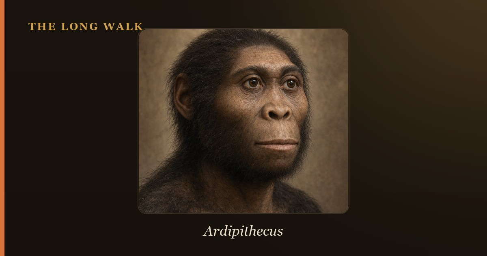

Ardipithecus vs Australopithecus compares two stages of early upright walking. Ardipithecus ramidus (about 4.4 million years ago, known from the skeleton Ardi) walked upright on the ground but had a grasping big toe and a small, ape-sized brain. Australopithecus (about 4.2 to 2 million years ago, including Lucy) had a walking foot and a fully reorganised pelvis. How Ardi moved, where she lived, how her species behaved and how it relates to later hominins are all still debated.

In 1994, Yohannes Haile-Selassie picked up a fragment of hand bone at Aramis, in the Middle Awash of Ethiopia. It was the first piece of a partial skeleton, catalogued as ARA-VP-6/500 and nicknamed Ardi. The bones were so fragile that the team, led by Tim White, removed them in blocks of sediment and spent years cleaning, scanning and rebuilding them. The results appeared as a set of 11 papers in Science in October 2009.
The species had been named in 1994, from teeth, as Australopithecus ramidus and moved to a new genus, Ardipithecus, a year later. The Ardipithecus vs Australopithecus comparison is about what changed between Ardi, at 4.4 million years ago, and the first australopiths, only a few hundred thousand years later. It is easiest to understand as four questions.
Ardipithecus vs Australopithecus at a glance
| Trait | Ardipithecus ramidus | Australopithecus (e.g. afarensis) |
|---|---|---|
| Time | ~4.4 million years ago (Ar. kadabba ~5.8–5.2) | ~4.2–2 million years ago |
| Brain | ~300–350 cc | ~400–550 cc |
| Big toe | Divergent, grasping | In line with other toes |
| Pelvis | Upper part modified for walking, lower part ape-like | Wide, bowl-shaped, built for walking |
| Canines | Small, similar in both sexes | Small, but large body size difference between sexes |
| Body size (female) | Ardi: ~1.2 m, ~50 kg | Lucy: ~1.1 m, ~29 kg |
| Famous fossil | Ardi (ARA-VP-6/500), Aramis | Lucy (AL 288-1), Hadar |
Question 1: How did Ardi move?
The clearest difference between the two genera is in the foot. Ardi's big toe sticks out sideways, like a thumb, for gripping branches. The rest of her foot was stiffer than a chimpanzee's, which would have helped her push off when walking on the ground. By the time of the Laetoli footprints, 3.66 million years ago, the australopith big toe lay in line with the others.
The pelvis tells a similar story. White's team, with the anatomist Owen Lovejoy, reconstructed the upper blade of Ardi's pelvis as short and broad, allowing hip muscles to keep her balanced on one leg at a time, a key feature of upright walking. The lower pelvis remained long and ape-like, suited to climbing. Ardi's pelvis was crushed, and some anatomists doubt how much of its shape can be reliably reconstructed. The “early walker” interpretation is widely accepted but not settled.
The hands are more contested. Lovejoy's team argued that Ardi's flexible wrist and palm show she did not knuckle-walk like chimpanzees, and that she moved along the tops of branches on her palms. That suggested the last common ancestor of humans and chimpanzees was not chimpanzee-like. In 2021, Thomas Prang and colleagues reanalysed the hand and found it closer to apes that hang and swing beneath branches. They concluded that the common ancestor may have been more chimpanzee-like than the 2009 papers proposed. This question is open.
Question 2: Where did Ardi live?
White's team described Aramis as woodland with patches of forest. Their evidence included about 150,000 catalogued plant and animal specimens, among them colobine monkeys and fig seeds. If correct, this weakens the old “savanna hypothesis”, which claimed upright walking evolved as forests gave way to open grassland.
In 2010, Thure Cerling and colleagues challenged this in Science. Their analysis of carbon isotopes in ancient soils pointed to a tree and bush savanna with less than 25% tree canopy. White's team replied that the samples did not represent the places where the hominin fossils were found. The dispute is unresolved. Australopithecus species lived in a wider range of habitats, from woodland to more open, mixed landscapes, though they too still climbed.
Question 3: How did Ardi's species live?
Male and female Ar. ramidus canines are similar in size, and males lack the large, sharpened upper canines of male chimpanzees. Lovejoy argued that this indicated less fighting between males and a move toward pair bonding, with males bringing food to females, which would also explain why walking upright and freeing the hands paid off. The idea is well known and strongly contested. Small canines may have evolved for other reasons, such as diet, and behaviour does not fossilise.
Australopithecus complicates the story. Its canines are also small, but in A. afarensis males may have been around one and a half times the mass of females, a difference often linked to competition between males. The two genera do not fit neatly into any single social model.
Question 4: Is Ardi an ancestor of Australopithecus?
Time and geography make it possible. In 2006, White's team reported Australopithecus anamensis fossils from Asa Issie, in the same Middle Awash region as Aramis, dated to about 4.1 million years ago. Only a few hundred thousand years and a short distance separate them from Ardi. That makes a direct line from Ardipithecus to Australopithecus plausible, at least as a working idea.
Not everyone agrees. In 2011, Bernard Wood and Terry Harrison argued that features such as small canines can evolve independently in apes, so Ardi might not be a hominin at all and could instead be an ape that shared some traits with us. Most researchers still place Ardipithecus on or near the human line, but its exact position is debated. The same problem affects the older candidates Sahelanthropus (about 7 million years ago) and Orrorin (about 6 million years ago). See the Toumai skull.
Before Ardi: Ardipithecus kadabba
The genus is older than Ardi. In 2001, Yohannes Haile-Selassie described fossils from the western margin of the Middle Awash dated to about 5.8 to 5.2 million years ago. They were first classed as a subspecies of ramidus and raised to a separate species, Ardipithecus kadabba, in 2004, mainly because its canines and premolars still wore against each other in a more ape-like way. Kadabba is known only from teeth, jaw fragments and a few bones, including a toe bone about 5.2 million years old whose joint suggests the foot pushed off the ground like that of an upright walker. Its interpretation depends heavily on that single bone.
If kadabba is ancestral to ramidus, the human line shows a slow sequence of changes over more than three million years: from kadabba to ramidus, then anamensis, and later afarensis. Each step is supported by few fossils, so the details are likely to change.
What changed between Ardipithecus and Australopithecus
Taken together, the evidence shows that upright walking was assembled in stages. Ardi walked on the ground but kept a grasping foot and a climber's lower body. The australopiths gave up the grasping toe and reorganised the pelvis and legs for more efficient walking, while keeping climbing features in their arms and shoulders. Brain size barely changed; this stage of evolution was about moving and feeding, not intelligence. Body size did not increase steadily either: Ardi was heavier than Lucy.
For Lucy's genus in more detail, see Lucy the Australopithecus and Australopithecus afarensis vs africanus. For why walking upright evolved at all, see why humans started walking upright.
Ardi and Lucy sit at the start of the human line. Open the interactive timeline to follow early upright walking from Ardipithecus to the australopiths.
Explore the family tree →Ardipithecus vs Australopithecus FAQ
How old is the Ardi skeleton?
Ardi (ARA-VP-6/500) is about 4.4 million years old. Its first bone was found in 1994 at Aramis, Ethiopia, and the skeleton was described in Science in 2009.
Is Ardipithecus older than Australopithecus?
Yes. Ardipithecus kadabba dates to about 5.8 to 5.2 million years ago and Ardipithecus ramidus to about 4.4 million years ago. The earliest Australopithecus, A. anamensis, appears about 4.2 million years ago.
Did Ardipithecus walk upright?
Probably, on the ground. Its pelvis and foot show adaptations for upright walking, but it kept a grasping big toe for climbing. The pelvis reconstruction is debated.
Was Ardi bigger than Lucy?
Yes. Ardi is estimated at about 1.2 m and 50 kg, while Lucy was about 1.1 m and 29 kg.
Did Ardipithecus knuckle-walk?
The 2009 team said no. A 2021 reanalysis of the hand suggested its ancestors may have been more ape-like, so the question is still debated.
- White, T. D. et al. (2009). 'Ardipithecus ramidus and the paleobiology of early hominids.' Science 326. doi.org
- Cerling, T. E. et al. (2010). 'Comment on the paleoenvironment of Ardipithecus ramidus.' Science 328. doi.org
- White, T. D. et al. (2006). 'Asa Issie, Aramis and the origin of Australopithecus.' Nature 440. doi.org
- Prang, T. C. et al. (2021). 'Ardipithecus hand provides evidence that humans and chimpanzees evolved from an ancestor suited for suspension.' Science Advances 7. doi.org
- Wood, B. & Harrison, T. (2011). 'The evolutionary context of the first hominins.' Nature 470. doi.org